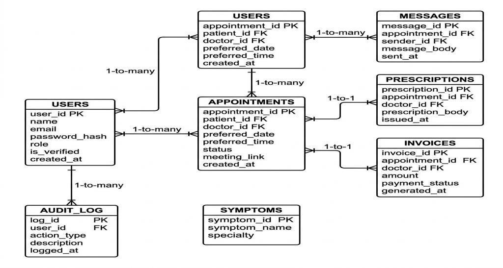

Description
Access to specialized medical care in developing countries like Pakistan is severely constrained by an acute shortage of medical practitioners (approximately 1 doctor per 1,000 patients) and unequal healthcare distribution between urban and rural centers. Furthermore, non-technical patients routinely struggle to identify appropriate medical specialties for their symptoms, causing misdirected clinic visits and treatment delays. The "Online Medical Consultation Platform" (MedConsult) addresses these critical barriers by integrating an AI-driven Natural Language Processing (NLP) Symptom Triage Engine with a comprehensive outpatient telemedicine workflow. Patients describe their symptoms in free-text natural language and receive automated specialty recommendations with posterior confidence scoring. The platform coordinates doctor directory discovery, conflict-free appointment scheduling, secure consultation chat via 3-second AJAX polling, external Google Meet video integration, digital prescriptions, and offline billing invoice generation.
Scope
- Telemedicine Outpatient Services: Web-based outpatient consultation workflows for non-emergency medical care.
- Role-Based Access Control: Strict privilege separation across Patient, Doctor, and Administrator classes.
- AI NLP Symptom Triage: Free-text patient symptom analysis with TF-IDF vectorization and Random Forest classification.
- Doctor Directory & Discovery: PMC-verified doctor listings filterable by specialty, qualification, and experience.
- Conflict-Free Scheduling: Atomic appointment booking engine preventing overlapping schedule slots.
- Secure Consultation Messaging: 3-second asynchronous AJAX polling for doctor-patient clinical messaging.
- Digital Prescriptions & Billing: Structured dosage issuance and PDF-formatted invoices with PKR offline settlement.
- Administrative Audit Control: PMC license audit portal, user verification, and security logging.
Functional Requirements
- FR-01 to FR-05 (Authentication): Registration, bcrypt password encryption, role-bound PHP sessions, and route guards.
- FR-06 to FR-11 (AI Symptom Triage): NLP preprocessing, TF-IDF feature extraction, Random Forest classification, and doctor shortlisting.
- FR-12 to FR-14 (Doctor Directory): Public doctor catalog, medical specialty filtering, and PMC credential visibility.
- FR-15 to FR-22 (Appointment Management): Booking requests, conflict detection, approval workflow, and Google Meet attachment.
- FR-23 to FR-26 (Secure Messaging): Appointment-bound asynchronous consultation chat updated via 3-second AJAX polling.
- FR-27 to FR-32 (Prescriptions & Invoices): Post-consultation digital care plans and offline billing records.
- FR-33 to FR-40 (Administration & Profiles): Administrator verification portal, audit logs, and profile updating.
Methodology
Developed following the Agile Scrum / Iterative Development Model, partitioned into six disciplined development phases conforming to the university-approved SRS specification:
2
UML & Architecture Design
3
AI Triage Model Training
4
PHP & Microservice Coding
5
Verification & QA (TC-01–20)
Comparison Table
| Feature / Benchmark |
Practo |
Zocdoc |
Marham |
MedConsult |
| AI NLP Free-Text Triage |
No |
No |
No |
Yes (TF-IDF/RF) |
| ML Specialty Prediction |
No |
No |
No |
Yes (41 Diseases) |
| Operational in Pakistan |
No |
No |
Yes |
Yes (Localized) |
| Conflict-Free Scheduling |
Yes |
Yes |
Yes |
Yes (Atomic SQL) |
| Consultation Chat |
Yes |
Yes |
Partial |
Yes (3s AJAX) |
| Digital Prescriptions |
Yes |
Yes |
Yes |
Yes |
| Consultation Invoicing |
Yes |
Yes |
Yes |
Yes (PKR Offline) |
| Administrator Verification |
Yes |
Yes |
Yes |
Yes (PMC Audit) |
| Self-Hosted Open Stack |
No |
No |
No |
Yes (LAMP/Docker) |
Schema Diagram (Database ERD)

Normalized MySQL 8.0 Relational ERD Schema: 7 Core Entities with Referential Integrity
Tools & Technologies